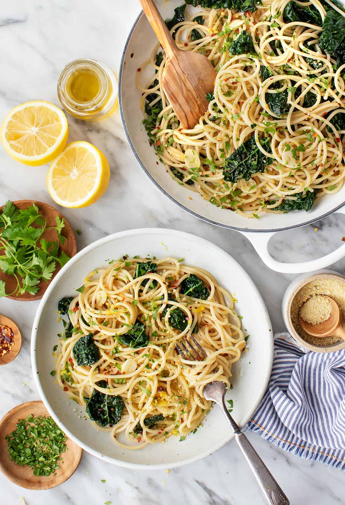

Spaghetti aglio e olio

Spaghetti aglio e olio translates to “spaghetti with garlic and oil.” The traditional dish contains little more than these ingredients. It might be finished with a sprinkle of parsley or a pinch of red pepper flakes, but even these are optional. In its simplest form, this classic Italian pasta features spaghetti, olive oil, garlic, salt, and pepper.
Ingredients:
- Spaghetti
- Olive oil
- Garlic
- Red pepper flakes
- Parsley
- Lemon
- Kale
- Parmesan cheese
How to make Spaghetti Aglio e Olio:
- First, cook the pasta. Bring a large pot of salted water to a boil and cook the pasta until al dente. Reserve some of the starchy pasta water before you drain it!
- Next, toast the garlic and red pepper flakes. Heat the oil in a large skillet and add the garlic slices and red pepper flakes. Cook until the garlic is fragrant and lightly browned around the edges.
- Then, add the kale. Toss it with the garlic oil and cook until it wilts
- Finally, stir in the pasta, along with the lemon juice and zest and a splash of the reserved pasta water. Toss to combine, adding more pasta water, as needed, to create a light sauce. Season with salt and pepper to taste. That’s it!
Garnish the pasta aglio e olio with parsley and Parmesan cheese, if desired. Enjoy it on its own, or serve it with a salad like my Caesar salad, Caprese salad, or citrus salad. It would also be delicious with roasted broccoli or cauliflower and homemade focaccia or no-knead bread for sopping up any leftover oil. Buon appetito!